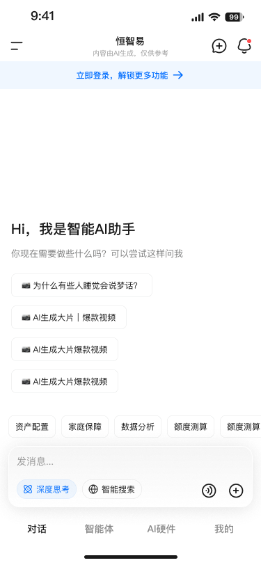
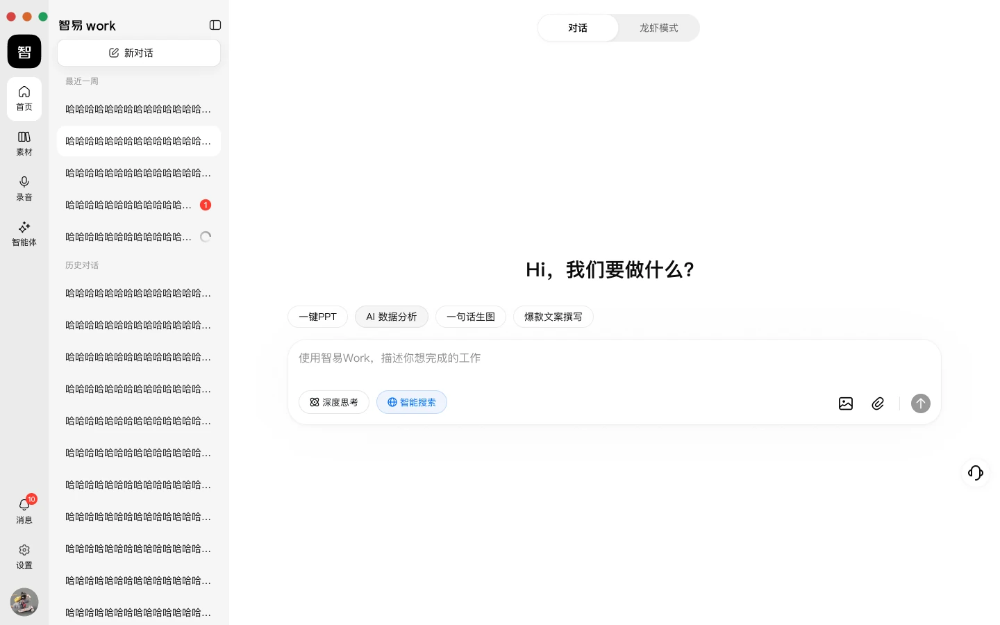

跳至作品
我是
宋冰艳，
6 年 UI/UX 设计经验
参与
50+
个项目的设计与上线
✦ 灵感便签 01 / 04
把复杂留给思考，
把简单留给用户。
点一下，换个想法 ↻
宋冰艳
设计的日常
UI / UX
从问题出发。
观察
→
推演
→
打磨


SELECTED / 08
打开我的作品
简历
PDF
精选作品
.
查看全部作品
06
↗
我的设计之旅
×
 宋冰艳
设计的日常 UI / UX从问题出发。观察→推演→打磨
打开我的作品
简历PDF
宋冰艳
设计的日常 UI / UX从问题出发。观察→推演→打磨
打开我的作品
简历PDF
宋冰艳
设计的日常 UI / UX从问题出发。观察→推演→打磨
打开我的作品
简历PDF
宋冰艳
设计的日常 UI / UX从问题出发。观察→推演→打磨
打开我的作品
简历PDF